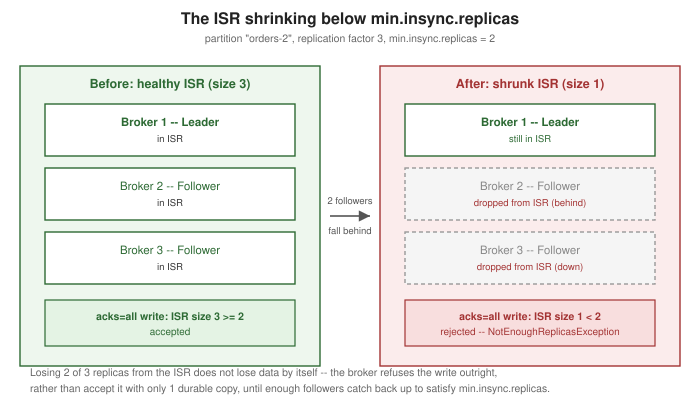

Kafka Reliability and Exactly-Once Semantics
|
This content was generated with the assistance of AI and should be verified against the official documentation before being relied on in production. |
Kafka’s reliability story is not one setting — it is several independent levers that only add up to a
guarantee when they are configured together, several of which are covered individually elsewhere on this site:
replication and the in-sync replica set on Apache Kafka
Architecture, acks/min.insync.replicas/idempotence on Kafka
Producers, manual offset commits on Kafka Consumers, and the
at-most-once/at-least-once/exactly-once vocabulary itself on
Delivery Guarantees. This page is the synthesis: it names the
handful of configuration decisions that turn "replicated and idempotent" into "safe to lose a broker without
losing or duplicating data," then goes deep on the one mechanism none of those pages cover in full — transactions, the feature that actually delivers exactly-once semantics across a multi-topic
consume-transform-produce pipeline — and closes with the one durability caveat every one of those levers still
has to live with: Kafka does not fsync to disk by default.
The reliability levers, tied together
Replication factor and unclean leader election
A topic’s replication factor sets how many broker copies of each partition exist; the ISR mechanics that keep
those copies in sync, and how a new leader is chosen when the current one fails, are covered in full on
Apache Kafka Architecture. One choice from that mechanism
belongs specifically in a reliability discussion: the topic configuration unclean.leader.election.enable
(default false) decides what happens if every in-sync replica of a partition becomes unavailable at once. Left
at its default, Kafka refuses to elect a leader from outside the ISR — the partition simply stays unavailable
for writes and reads until a former in-sync replica comes back, which guarantees no acknowledged data is ever
silently lost. Setting it to true instead lets a broker outside the ISR become leader as a last resort,
trading that guarantee for availability: the partition keeps serving traffic, but whatever the new leader never
replicated is gone. Kafka’s own eligible-leader-replicas mechanism (also covered on
Apache Kafka Architecture) narrows how often this trade-off
actually has to be made, by widening the pool of safe,
data-preserving candidates the controller can pick from before it would ever need unclean election — but it
does not remove the setting itself, which remains the last line of defense between "unavailable" and "lossy."
min.insync.replicas and acks=all
The producer-side durability guarantee — acks=all plus min.insync.replicas rejecting writes outright if the
ISR has shrunk too far to honor them — is covered in full, including the exact interaction between the two
settings, on Kafka Producers and again from the delivery-semantics
angle on Delivery Guarantees. The short version for this page’s
purposes: with a replication factor of 3 and min.insync.replicas=2, an acks=all write survives the loss of
any single broker without loss or without the producer ever believing an unreplicated write succeeded — raising min.insync.replicas further trades some availability (fewer tolerable simultaneous broker failures)
for a stronger floor on how many copies a committed write is guaranteed to have.
Producer retries and idempotence
enable.idempotence (default true since Kafka 3.0) is what makes the producer’s own network retries safe — without it, a retried send after an ambiguous timeout can create a duplicate record at the log level, on top of
whatever duplicates a crashing application creates. The full mechanism (producer IDs, sequence numbers,
delivery.timeout.ms) is covered on Kafka Producers; the point
worth restating here is that idempotence only removes producer-retry duplicates, not application-level
duplicates from a producer process that crashes and resends the same logical record from scratch — transactions,
below, are what closes that remaining gap.
Consumer commit discipline
Symmetrically, on the consumer side, Kafka Consumers covers
commitSync()/commitAsync() and why committing only after processing finishes (rather than before) is the
consumer half of at-least-once delivery. Reliability end to end requires both halves configured for durability
at once — an idempotent acks=all producer feeding a consumer that commits before processing still loses work
on a consumer crash, and a careful manual-commit consumer reading from a producer with acks=1 still loses
records on a leader failure. Neither side’s discipline substitutes for the other’s.
Transactions and exactly-once semantics
Idempotence and careful commit ordering get an application to at-least-once, with the burden of deduplication or idempotent processing logic left to the application. Transactions (KIP-98, generally available since Kafka 0.11) go further: they let a producer commit a set of writes — to one or several topic-partitions — together with an update to a consumer group’s committed offsets, atomically, as a single unit that either becomes fully visible or leaves no trace at all. This is what actually delivers exactly-once semantics for the common consume-transform-produce pattern: read from one topic, transform, write to another, and commit the read offset, without ever double-processing or silently dropping a record across a crash in the middle.
The transactional producer API
A transactional producer is configured with a stable transactional.id and driven through four calls:
Properties props = new Properties();
props.put(ProducerConfig.BOOTSTRAP_SERVERS_CONFIG, "localhost:9092");
props.put(ProducerConfig.TRANSACTIONAL_ID_CONFIG, "order-enrichment-1");
// acks=all and enable.idempotence=true are implied/required by a transactional.id
KafkaProducer<String, String> producer = new KafkaProducer<>(props);
producer.initTransactions(); // once, at startup -- fences off any prior instance with the same transactional.id
while (true) {
ConsumerRecords<String, String> records = consumer.poll(Duration.ofMillis(500));
if (records.isEmpty()) {
continue;
}
producer.beginTransaction();
try {
for (ConsumerRecord<String, String> record : records) {
producer.send(new ProducerRecord<>("orders-enriched", record.key(), enrich(record.value())));
}
// the read offsets become part of the same atomic unit as the writes above
producer.sendOffsetsToTransaction(currentOffsets(records), consumer.groupMetadata());
producer.commitTransaction();
} catch (Exception e) {
producer.abortTransaction(); // undoes the writes and the offset update together; nothing is half-applied
}
}initTransactions() runs once at startup and, critically, fences any earlier producer instance still running
under the same transactional.id — the classic "zombie" scenario where a slow or partially-hung old instance
is still trying to write after a new one has taken over. beginTransaction() opens a transaction,
sendOffsetsToTransaction(Map, ConsumerGroupMetadata) folds the consumer’s offset commit into that same
transaction instead of committing it separately, and commitTransaction()/abortTransaction() close it out — committed writes and the offset update become visible together, or an abort discards both, so a crash between
"produced the transformed record" and "committed the read offset" can never leave the pipeline having produced
output for a record it will also redeliver and reprocess. On the read side, isolation.level=read_committed
(covered on Delivery Guarantees) is what makes a downstream
consumer skip the writes of a transaction that was aborted, or is still open, rather than seeing them
immediately.
The sequence below draws one iteration of this loop — a transaction spanning a consumer’s offset commit and a producer’s writes to a downstream topic.
Transactions v2 (KIP-890, Kafka 4.0)
Starting in Kafka 4.0, a strengthened transactional protocol — transactions v2, delivered by KIP-890 — is
enabled by default on the broker (transaction.version=2) and used automatically by 4.0+ producer clients. Its
core change is bumping the producer’s epoch on every transaction rather than reusing one across many
transactions, which closes a narrow but real gap in the original protocol where a producer that crashed and
restarted mid-transaction could, in rare timing windows, have some of its intended writes committed as part of
the next transaction instead of being cleanly aborted with the one they belonged to. The new protocol also
collapses what used to be a separate client-side "add partition" call and server-side "verify" round trip into a
single server-side call, which is a latency and throughput improvement on top of the correctness fix; a cluster
running 4.0+ negotiates this automatically; older, pre-4.0 clients keep working against it under the previous
protocol.
What exactly-once does and does not cover
Kafka’s transactions guarantee exactly-once within Kafka — across the topics and consumer-group offsets a
single transaction touches. They do not, and cannot, extend that guarantee to a side effect a transaction’s
processing logic has on a system Kafka does not control: writing to an external database, calling a downstream
HTTP API, or sending an email inside the same loop is not covered by commitTransaction(), and a crash after
that side effect but before the commit (or the reverse) can still duplicate or lose that external effect even
though the Kafka-side state stays perfectly exactly-once. Making an external side effect participate in the same
guarantee needs its own idempotency or transactional-outbox design on the external system’s side, entirely
independent of anything a transactional.id provides.
The durability caveat: Kafka does not fsync by default
None of the levers above change one underlying fact, already introduced on
Delivery Guarantees: an acks=all commit means every in-sync
replica has the record in its log, which in the common case means the OS page cache, not necessarily a
disk-flushed (fsync) write. Two topic-level configurations exist to force an fsync: flush.messages (force
a flush every N messages) and flush.ms (force a flush every N milliseconds); both default to effectively
"never" (Long.MAX_VALUE), and the broker-level log.flush.interval.messages/log.flush.interval.ms set the
cluster-wide defaults they inherit. Kafka’s own documented recommendation is to leave both alone and rely on
replication instead: forcing a synchronous fsync on every write serializes every producer behind physical disk
latency, while the OS’s own background flushing already writes dirty pages out efficiently on its own schedule.
The practical mitigation for the data a page-cache-only write could still lose in a total power failure is not
tuning flush.messages down to 1 — it is what min.insync.replicas and replication factor already buy:
spreading replicas across failure domains (racks, availability zones) so that the same power event is unlikely
to take out every in-sync replica’s page cache simultaneously. The figure below shows the specific failure mode
min.insync.replicas exists to reject outright rather than silently risk: a three-replica partition whose ISR
has shrunk to one member.
